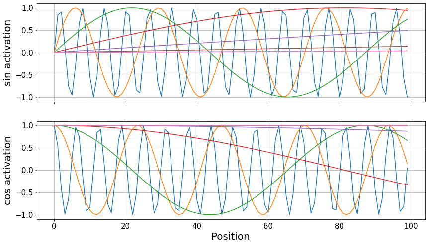

# Data loaders
tfm_dls = get_transformer_dls(bs=128)
tfm_dls.device = default_device()
# Model
my_tf = Transformer(1, num_encoder_layers=4, num_decoder_layers=4, dim_ff=500)
my_tf.to(default_device())
# Learner
learn = Learner(tfm_dls, my_tf, loss_func=CrossEntropyLossFlat(), model_dir=MODEL_PATH)Models
Architectures for trajectory segmentation.
Utility layers
tfm_encoder
tfm_encoder (dim, n_head=1, n_layers=8, dim_ff=1024, dropout=0.1, activation='relu')
Creates a nn.TransformerEncoder.
ConcatPooling
ConcatPooling (dim=-1)
Perform max and average pool over dim. Outputs [avg_pool, max_pool].
Transpose
Transpose (dims)
Transposition layer of dims.
Normalization
Normalization (dim=-1)
Z-Normalization over the designated dimension.
get_act
get_act (vocab_sz, yrange=(0, 2.05))
Provides a sigmoid or softmax activation according to inferring the task (regression or classification) from vocab_sz.
Dense layers
LinBnDropTrp
LinBnDropTrp (n_in, n_out, bn=True, p=0.0, trp=(2, 1), act=None, ndim=1)
Linear layer with batch norm, dropout and transposition.
Classifier
Classifier (dims, ps, final_act=False, yrange=None, trp=(2, 1))
Dense classifier.
We use the Classifier at the end of most of our models. It is comprised of LinBnDropTrp layers that allow us to obtain the desired output dimension for any task. Furthermore, we can specify whether to apply a final activation function through final_act. In classification tasks with pytorch, where we use CrossEntropyLoss or fastai’s CrossEntropyLossFlat, we do not want to apply the softmax activation function to the logits before passing them to the loss function.
Self-attention-based models
Extracting pointwise properties of a sequence can be understood as a translation task. Thus, it is natural to tackle the problem using a transformer or other purely self-attention-based architectures. Here, we provide a full Transformer (encoder + decoder), and an encoder-only model EncoderClassifier.
Transformer
Transformer (dim, n_class=5, nhead_enc=1, nhead_dec=1, num_encoder_layers=6, num_decoder_layers=6, dim_ff=2048, dropout=0.1, activation='relu')
Transformer architecture.
The Transformer implements a basic transformer architecture as introduced in Attention is all you need from Vaswani, et. al., in 2017.
Let’s see an example of how to train a transformer to perform a segmentation task of the anomalous diffusion model in heterogeneous trajectories.
learn.fit_one_cycle(15, lr_max=1e-2)| epoch | train_loss | valid_loss | time |
|---|---|---|---|
| 0 | 0.081026 | 0.063063 | 00:41 |
| 1 | 0.047181 | 0.045920 | 00:40 |
| 2 | 0.044656 | 0.043783 | 00:41 |
| 3 | 0.043903 | 0.043491 | 00:40 |
| 4 | 0.043756 | 0.043521 | 00:41 |
| 5 | 0.043616 | 0.043354 | 00:41 |
| 6 | 0.043514 | 0.043158 | 00:40 |
| 7 | 0.043429 | 0.043019 | 00:41 |
| 8 | 0.043339 | 0.043081 | 00:41 |
| 9 | 0.043207 | 0.042961 | 00:41 |
| 10 | 0.043100 | 0.042880 | 00:41 |
| 11 | 0.043028 | 0.042799 | 00:41 |
| 12 | 0.042846 | 0.042705 | 00:40 |
| 13 | 0.042833 | 0.042656 | 00:41 |
| 14 | 0.042852 | 0.042683 | 00:41 |
Warning
The task is particularly bad conditioned for a naive transformer training such as this one. The loss does get low, but it is mainly because the model learns to predict whatever the previous token was, so be careful!
In these segmentation tasks over piecewise constant segments, the target may look like \([2,2,2,2,2,1,1,1,1,1]\). With such naive training scheme, the transformer learns to replicate whatever the last digit is and it fails to find the changepoints. Let’s have a look at some predictions.
x, y_one_hot, y = dls.one_batch()
learn.model.eval()
preds, pred_one_hot, outs = learn.model.segment(x)preds[:10, :10]tensor([[4, 4, 4, 4, 4, 4, 4, 4, 4, 4],
[4, 4, 4, 4, 4, 4, 4, 4, 4, 4],
[4, 4, 4, 4, 4, 4, 4, 4, 4, 4],
[4, 4, 4, 4, 4, 4, 4, 4, 4, 4],
[4, 4, 4, 4, 4, 4, 4, 4, 4, 4],
[4, 4, 4, 4, 4, 4, 4, 4, 4, 4],
[4, 4, 4, 4, 4, 4, 4, 4, 4, 4],
[4, 4, 4, 4, 4, 4, 4, 4, 4, 4],
[4, 4, 4, 4, 4, 4, 4, 4, 4, 4],
[4, 4, 4, 4, 4, 4, 4, 4, 4, 4]], device='cuda:0')y[:10, :10]tensor([[4, 4, 4, 4, 4, 4, 4, 4, 4, 4],
[0, 0, 0, 0, 0, 0, 0, 0, 0, 0],
[2, 2, 2, 2, 2, 2, 2, 2, 2, 2],
[3, 3, 3, 3, 3, 3, 3, 3, 3, 3],
[1, 1, 1, 1, 1, 1, 1, 1, 1, 1],
[2, 2, 2, 2, 2, 2, 2, 2, 2, 2],
[3, 3, 3, 3, 3, 3, 3, 3, 3, 3],
[0, 0, 0, 0, 0, 0, 0, 0, 0, 0],
[0, 0, 0, 0, 0, 0, 0, 0, 0, 0],
[4, 4, 4, 4, 4, 4, 4, 4, 4, 4]], device='cuda:0')The model has correctly predicted the label for the first segment: 4 corresponding to SBM. However, it has then proceeded to replicate the label over the whole trajectory. You’ll need some extra tricks to train this :)
PositionalEncoding
PositionalEncoding (d_model, dropout=0.1, max_len=10000)
Same as nn.Module, but no need for subclasses to call super().__init__
Transformers see the trajectories all at once without any notion of distance between the points. Here, we implement a positional encoding based on the addition of sines and cosines to the data, as introduced in the original paper.
pe = PositionalEncoding(14, max_len=100)
pos_enc = pe.pos_enc.squeeze()Code
fontsize, ticksize = 20, 15
fig, axes = plt.subplots(2, sharex=True, figsize=(14, 8))
for sin, cos in zip(pos_enc.T[::2], pos_enc.T[1::2]):
axes[0].plot(sin)
axes[1].plot(cos)
axes[1].set_xlabel("Position", fontsize=fontsize)
axes[0].set_ylabel("sin activation", fontsize=fontsize)
axes[1].set_ylabel("cos activation", fontsize=fontsize)
for ax in axes:
ax.grid()
ax.tick_params(labelsize=ticksize)
EncoderClassifier
EncoderClassifier (dim, length=200, n_class=5, nhead_enc=1, num_encoder_layers=6, dim_ff=2048, dropout=0.1, activation='relu', linear_layers=[1024], ps=None, yrange=(0, 2.05), final_act=False, trp=(2, 1))
Transformer encoder with a linear classifier.
dls = get_segmentation_dls()
dls.device = default_device()
enc = EncoderClassifier(1, num_encoder_layers=12, dim_ff=1024)
enc.to(default_device())
learn = Learner(dls, enc, loss_func=CrossEntropyLossFlat(), model_dir=MODEL_PATH)learn.fit_one_cycle(5, lr_max=1e-1)| epoch | train_loss | valid_loss | time |
|---|---|---|---|
| 0 | 1.611631 | 1.609615 | 00:58 |
| 1 | 1.611847 | 1.613333 | 00:58 |
| 2 | 1.611033 | 1.609803 | 00:59 |
| 3 | 1.609777 | 1.609575 | 00:59 |
| 4 | 1.609749 | 1.609633 | 01:00 |
Combined convolutional and self-attention models
Convolutional models have seen great success characterizing diffusion trajectories, specially combined with recurrent neural networks, as seen in the AnDi challenge paper. We provide a few models that combine convolutional feature extractors with self-attention mechanisms.
ConvAttn
ConvAttn (dim, n_class=5, conv_dims=[64, 128, 128], nhead_enc=1, num_encoder_layers=6, dim_ff=2048, dropout=0.1, linear_layers=[128], activation='relu', yrange=(0, 2.05))
Convolution layers with a transformer encoder.
ConvAttn is built out of basic convolutional layers that act as an embedding for a transformer encoder. There is a dense Classifier at the end that achieves the desired output dimensions.
Performing a diffusion model segmentation task is the most straightforward, simply specify the trajectory dimension, which defaults to dim=1 in the dataloaders and provide the appropiate loss function CrossEntropyLossFlat.
dls = get_segmentation_dls()
dls.device = default_device()
model = ConvAttn(2, conv_dims=[64, 128, 128], num_encoder_layers=8, dim_ff=512, nhead_enc=8, linear_layers=[])
model.to(default_device())
learn = Learner(dls, model, loss_func=CrossEntropyLossFlat(), model_dir=MODEL_PATH)For anomalous exponent segmentation, we must specify the target target='y_exp' as well as provide the corresponding loss function, either L1LossFlat or MSELossFlat. Don’t forget to provide the model with the proper number of classes n_class=1.
dls = get_segmentation_dls(target='y_exp')
dls.device = default_device()
model = ConvAttn(1, n_class=1, conv_dims=[32, 64, 128, 256], num_encoder_layers=8, dim_ff=512, nhead_enc=8, linear_layers=[])
model.to(default_device())
learn = Learner(dls, model, loss_func=L1LossFlat(), model_dir=MODEL_PATH)To train, we simply call learn.fit_one_cycle.
XResBlocks
XResBlocks (block, layers, expansion=1, p=0.0, c_in=1, n_out=1000, stem_szs=(32, 32, 64), block_szs=None, widen=1.0, ndim=1, ks=3, stride=2, sa=False, stem_stride=False, act_cls=<class 'torch.nn.modules.activation.ReLU'>, groups=1, reduction=None, nh1=None, nh2=None, dw=False, g2=1, sym=False, norm_type=<NormType.Batch: 1>, pool=<function AvgPool>, pool_first=True, padding=None, bias=None, bn_1st=True, transpose=False, init='auto', xtra=None, bias_std=0.01, dilation:Union[int,Tuple[int,int]]=1, padding_mode:str='zeros', device=None, dtype=None)
XResNet block.
XResBlocks follow the XResNet architecture to build a convolutional neural network feature extractor.
The blocks start with an initial purely-convolutional stem. Then, every subsequent block consists of two convolutional layers with a skip connection or identity path. The identity paths have a single convolutional layer with kernel size 1 to match the channel dimension of their corresponding convolutional paths.
XResAttn
XResAttn (dim, n_class=5, conv_blocks=[1, 1], block=<class 'fastai.layers.ResBlock'>, block_szs=[64, 128], nhead_enc=1, n_encoder_layers=6, dim_ff=2048, dropout=0.1, pos_enc=True, linear_layers=[128], activation='relu', norm=True, yrange=(0, 2.05), expansion=1, p=0.0, c_in=1, n_out=1000, stem_szs=(32, 32, 64), widen=1.0, ndim=1, ks=3, stride=2, sa=False, stem_stride=False, act_cls=<class 'torch.nn.modules.activation.ReLU'>, groups=1, reduction=None, nh1=None, nh2=None, dw=False, g2=1, sym=False, norm_type=<NormType.Batch: 1>, pool=<function AvgPool>, pool_first=True, padding=None, bias=None, bn_1st=True, transpose=False, init='auto', xtra=None, bias_std=0.01, dilation:Union[int,Tuple[int,int]]=1, padding_mode:str='zeros', device=None, dtype=None)
Xresnet blocks with attention at the end.
| Type | Default | Details | |
|---|---|---|---|
| dim | |||
| n_class | int | 5 | |
| conv_blocks | list | [1, 1] | |
| block | PrePostInitMeta | ResBlock | |
| block_szs | list | [64, 128] | |
| nhead_enc | int | 1 | |
| n_encoder_layers | int | 6 | |
| dim_ff | int | 2048 | |
| dropout | float | 0.1 | |
| pos_enc | bool | True | |
| linear_layers | list | [128] | |
| activation | str | relu | |
| norm | bool | True | |
| yrange | tuple | (0, 2.05) | |
| expansion | int | 1 | |
| p | float | 0.0 | |
| c_in | int | 1 | |
| n_out | int | 1000 | |
| stem_szs | tuple | (32, 32, 64) | |
| widen | float | 1.0 | |
| ndim | int | 1 | |
| ks | int | 3 | |
| stride | int | 2 | |
| sa | bool | False | |
| stem_stride | bool | False | |
| act_cls | type | ReLU | |
| groups | int | 1 | |
| reduction | NoneType | None | |
| nh1 | NoneType | None | |
| nh2 | NoneType | None | |
| dw | bool | False | |
| g2 | int | 1 | |
| sym | bool | False | |
| norm_type | NormType | NormType.Batch | |
| pool | function | AvgPool | |
| pool_first | bool | True | |
| padding | NoneType | None | |
| bias | NoneType | None | |
| bn_1st | bool | True | |
| transpose | bool | False | |
| init | str | auto | |
| xtra | NoneType | None | |
| bias_std | float | 0.01 | |
| dilation | Union | 1 | |
| padding_mode | str | zeros | TODO: refine this type |
| device | NoneType | None | |
| dtype | NoneType | None |
XResAttn is an evolution of ConvAttn in which we replace the basic convolutional layer by XResBlocks.
dim = 2
dls = get_segmentation_dls(dim=dim, target='y_exp', size=10000)
dls.device = default_device()
model = XResAttn(dim, n_class=1, stem_szs=(32,), conv_blocks=[1, 1], block_szs=[64, 128],
n_encoder_layers=6, dim_ff=512, nhead_enc=8, linear_layers=[])
model.to(default_device())
learn = Learner(dls, model, loss_func=L1LossFlat(), model_dir=MODEL_PATH)learn.fit_one_cycle(15, lr_max=2e-4)| epoch | train_loss | valid_loss | time |
|---|---|---|---|
| 0 | 0.351831 | 0.341731 | 05:52 |
| 1 | 0.317376 | 0.313373 | 05:53 |
| 2 | 0.296154 | 0.291456 | 05:53 |
| 3 | 0.276105 | 0.274482 | 05:53 |
| 4 | 0.265737 | 0.263980 | 05:53 |
| 5 | 0.256997 | 0.253854 | 05:53 |
| 6 | 0.245702 | 0.243755 | 05:53 |
| 7 | 0.243005 | 0.237430 | 05:53 |
| 8 | 0.235679 | 0.235492 | 05:53 |
| 9 | 0.231861 | 0.231436 | 05:53 |
| 10 | 0.231640 | 0.229545 | 05:53 |
| 11 | 0.225968 | 0.227001 | 05:53 |
| 12 | 0.223144 | 0.226924 | 05:54 |
| 13 | 0.223188 | 0.226133 | 05:54 |
| 14 | 0.219965 | 0.225446 | 05:53 |
LogXResAttn
LogXResAttn (dim, n_class=5, conv_blocks=[1, 1], block=<class 'fastai.layers.ResBlock'>, block_szs=[64, 128], nhead_enc=1, n_encoder_layers=6, dim_ff=2048, dropout=0.1, pos_enc=True, linear_layers=[128], activation='relu', norm=True, yrange=(0, 2.05), **kwargs)
Xresnet blocks with attention at the end. t takes the logarithm of the displacements.
The LogXresAttn model extracts the displacements of the input trajectory and works with their logarithm, rather than with the raw positional data. This allows it to seamlessly deal with trajectories that display diffusion coefficients across several orders of magnitude that could otherwise be lost in the numerical precision.
Note
Since LogXresAttn works with the trajectory displacements, its output is a prediction for every displacement. While this is more physically meaningful, we need to take into account that the output dimension will be smaller (\(N-1\) displacements for \(N\) points).
U-net
U-nets were originally conceived to perform image segmentation. Therefore, they are particularly well-suited for the trajectory segmentation task.
We provide a dynamic U-net that takes the backbone of a model and transforms it into the U-like architecture.
icnr_init_general
icnr_init_general (x, scale=2, init=<function kaiming_normal_>)
Generalized version of icnr_init.
GeneralPixleShuffle
GeneralPixleShuffle (upscale_factor)
Generalized Pixle Shuffle to work with any data dimensionality.
PixelShuffleUpsampling
PixelShuffleUpsampling (ni, nf=None, scale=2, ndim=2, blur=False, norm_type=<NormType.Weight: 3>, act_cls=<class 'torch.nn.modules.activation.ReLU'>)
Updample by scale from ni filters to nf using GeneralPixleShuffle.
UnetBlock
UnetBlock (up_in_c, x_in_c, hook, ndim=1, final_div=True, blur=False, act_cls=<class 'torch.nn.modules.activation.ReLU'>, self_attention=False, init=<function kaiming_normal_>, norm_type=None, ks=3, stride=1, padding=None, bias=None, bn_1st=True, transpose=False, xtra=None, bias_std=0.01, dilation:Union[int,Tuple[int,int]]=1, groups:int=1, padding_mode:str='zeros', device=None, dtype=None)
A quasi-UNet block using pixel shuffle upsampling.
A key element of the U-net is the upsmapling branch. We do it by stacking UnetBlocks that perform convolution-based upsampling with pixel shuffle. We implement a PixelShuffleUpsampling layer that uses our GeneralPixleShuffle, which is a generalized version of the original pixel shuffle.
To build the downsampling branch, we take the desired architecture and we pass a dummy input through it to extract relevant information, such as the points at which dimensions change, which then need to be connected to the upsampling branch.
dummy_eval
dummy_eval (m, size=(64, 64))
Evaluate m on a dummy input of a certain size
in_channels
in_channels (m)
Return the shape of the first weight layer in m.
model_sizes
model_sizes (m, size=(64, 64))
Pass a dummy input through the model m to get the various sizes of activations.
get_sz_change_idxs
get_sz_change_idxs (sizes)
Get the indexes of the layers where the size of the activation changes.
ResizeToOrig
ResizeToOrig (mode='nearest')
Merge a shortcut with the module result by adding or concatenating them if dense=True.
AttnDynamicUnet
AttnDynamicUnet (encoder, n_out, img_size, ndim=1, num_encoder_layers=6, nhead_enc=8, dim_ff=1024, p=0.1, act='relu', blur=False, blur_final=True, self_attention=False, y_range=None, last_cross=True, bottle=False, act_cls=<class 'torch.nn.modules.activation.ReLU'>, init=<function kaiming_normal_>, norm_type=None, **kwargs)
Create a U-Net from a given architecture.
AttnDynamicUnet builds a U-net like architecture from a given architecture (encoder). The input encoder conforms the downsampling branch, then, we add a convolution and a transformer encoder at the center (bottom of the U), and build the upsampling branch with UnetBlocks that have skip connections wherever the dimension in the encoder changes.
UnetModel
UnetModel (encoder, n_class, img_size, nf=64, linear_layers=[128], p=0.1, y_range=(0, 2.05), ndim=1, num_encoder_layers=6, nhead_enc=8, dim_ff=1024, act='relu', blur=False, blur_final=True, self_attention=False, last_cross=True, bottle=False, act_cls=<class 'torch.nn.modules.activation.ReLU'>, init=<function kaiming_normal_>, norm_type=None)
U-net with a final dense layer.
UnetModel uses AttnDynamicUnet to build a U-net from a desired architecture and appends a Classifier at the end to obtain the desired output dimension for the task.
For example, we can easily build a U-net with an XResNet encoder to infer the anomalous diffusion exponent \(\alpha\) at every time step of the input trajectories.
dls = get_segmentation_dls(target='y_exp')
dls.device = default_device()
encoder = XResBlocks(ResBlock, [1, 2, 1], c_in=1, stem_szs=(32,), block_szs=[64, 128, 256])
umodel = UnetModel(encoder, 1, (200,), num_encoder_layers=4, dim_ff=512, linear_layers=[], y_range=(0, 2.05))
umodel.to(default_device())
ulearn = Learner(dls, umodel, loss_func=L1LossFlat(), model_dir=MODEL_PATH)ulearn.fit_one_cycle(15, lr_max=1e-3)| epoch | train_loss | valid_loss | time |
|---|---|---|---|
| 0 | 0.353012 | 0.344957 | 00:35 |
| 1 | 0.335089 | 0.334739 | 00:35 |
| 2 | 0.332037 | 0.327504 | 00:35 |
| 3 | 0.324102 | 0.323693 | 00:36 |
| 4 | 0.317840 | 0.316003 | 00:36 |
| 5 | 0.312131 | 0.314038 | 00:36 |
| 6 | 0.309137 | 0.310193 | 00:35 |
| 7 | 0.308097 | 0.305047 | 00:35 |
| 8 | 0.303723 | 0.304123 | 00:36 |
| 9 | 0.299942 | 0.302303 | 00:36 |
| 10 | 0.299658 | 0.300621 | 00:36 |
| 11 | 0.297696 | 0.300281 | 00:36 |
| 12 | 0.293374 | 0.299450 | 00:36 |
| 13 | 0.292193 | 0.299131 | 00:36 |
| 14 | 0.290734 | 0.299084 | 00:36 |